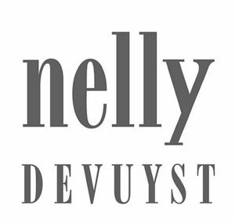

Trade Mark Journal No.2025/009 28 February 2025
WO0000001839619 (3)
Office of origin: Canada
Date of International Registration:15 January 2025
Date of designation in the UK:
15 January 2025

- Class 3
- Aloe soap; cream soap; facial soaps; liquid bath soap; liquid soap for body washing; liquid soaps for hands, face and body; liquid soaps used in foot baths; loofah soaps; non-medicated liquid soaps; non-medicated soap powders; perfumed soap; scented soaps; shower soaps; skin soaps; soap-based face washes, non-medicated; bath and shower gels; hemp-based shower gels; shower and bath gels; shower gels, creams and oils; bath and shower foam; bath foams; foam preparations for the bath; anti-perspirant deodorants; anti-perspirants and deodorants for personal use; body deodorants in pill form; body sprays used as personal deodorants and fragrances; deodorants for the feet; douching preparations for personal sanitary or deodorant purposes; feminine deodorant sprays; cleansing milk; cleansing milk for skin care; cosmetic facial toners; facial toners; non-medicated skin toners; toners for cosmetic use; cosmetic foams containing sunscreens; cosmetic patches containing sunscreen and sun block for use on the skin; sunscreen; sunscreen cream; sunscreen creams for cosmetic purposes; sunscreen lotions; sunscreen lotions for cosmetic purposes; sunscreen sticks; water-resistant sunscreen; waterproof sunscreen; eucalyptus essential oil for use in aromatherapy; lemongrass essential oil for use in aromatherapy; skin conditioners; tea tree oil; tea-tree essential oil for use in aromatherapy; sun protectors for lips; solid shampoo bars; cosmetic creams and gels for the face, hands and body; cosmetic creams and lotions for face and body care; cosmetic creams, milks, lotions, gels and powders for the face, hands and body; cosmetic powders, creams and lotions for the face, hands and body; face creams; body scrubs for cosmetic purposes; deep purifying scrub masks; depilatory and exfoliating preparations; exfoliant creams for cosmetic purposes; exfoliants for the skin; exfoliating gels, non-medicated; exfoliating scrubs for cosmetic purposes; exfoliating scrubs for the body; exfoliating scrubs for the face; exfoliating scrubs for the feet; exfoliating scrubs for the hands; non-medicated exfoliating preparations for the face; pore-cleansing exfoliants; skin cleansing and polishing preparations; skin exfoliants; wash scrub masks; body milk; body firming creams; body mask creams; body mask creams for cosmetic purposes; cosmetic body creams; face and body creams for cosmetic purposes; scented body creams; scented body lotions and creams; skin and body topical lotions, creams and oils for cosmetic use; cosmetic creams for firming skin around eyes; eye compresses for cosmetic purposes; eye concealer serum; eye contour repair creams; eye cooling masks; eye creams; eye gel cooling masks; eye gel cooling patches; eye gel warming masks; eye gels; eye lotions for cosmetic purposes; eye masks for cosmetic purposes; fragrance sachets for eye pillows; gel eye masks; gel eye patches for cosmetic purposes; under-eye concealers; eye contour correction serum; facial serums; facial serums for cosmetic purposes; non-medicated skin serums for the face; skin calming serum; skin relief serum; cosmetic preparations for skin renewal; honey deep nourishing face masks; anti-aging creams; anti-aging creams for cosmetic purposes; anti-aging creams for cosmetic use; massage oil, non-medicated; massage oils and lotions; aromatic essential oils; bath oils and bath salts; body oils for cosmetic purposes; body shimmer oils; buriti-based essential oils; cake flavourings being essential oils; castor oil for cosmetic purposes; coconut essential oil; coconut oil for cosmetic purposes; coconut oil-based cosmetics; copaiba-based essential oils; cosmetic oils for the skin; beauty masks for hands; blackhead removal masks; body mask lotions; body mask lotions for cosmetic purposes; body mask powder; body mask powder for cosmetic purposes; body mask powders for cosmetic purposes; charcoal purifying face masks; cleaning masks for the body; cleaning masks for the face; cleansing masks; cosmetic facial masks; cosmetic masks; deep cleansing face masks; disposable steam-heated masks, not for medical purposes; face masks for oily skin; facial masks for cosmetic use; facial masks to add tone to the skin; facial masks to remove excess oil from the face; ginger cleansing masks; mask packs for cosmetic purposes; mineral cleansing masks; oil-balancing clay masks; pore-clearing face masks; seaweed oil-balancing clay masks; skin clearing clay masks; skin masks; skin masks for cosmetic purposes; smoothing face masks; after-sun gels for cosmetic purposes; aftershave gels; age retardant gels; age retardant gels for cosmetic purposes; aloe vera gels for cosmetic purposes; body and facial gels; cosmetic preparations for skin care in the form of gels; emulsions, gels and lotions for skin care; eye gels for cosmetic purposes; facial gels; firming body gels for cosmetic purposes; lavender gels; make-up removing milk, gels, lotions and creams; mattifying gel cream; moisturizing creams, lotions and gels; moisturizing gels; moisturizing skin gels; non-medicated aftershave gels; shaving gel; skin mattifying gel cream; sun tan gel; sun-tanning gels; non-medicated creams for facial scrubs; non-medicated scrubs for the face and body; feminine hygiene cleansing towelettes; cosmetic breast firming preparations; cosmetic creams for firming the skin; topical herbal creams for firming and enhancing breasts.
12998131 Canada Inc.
Representative: BENOÎT & CÔTÉ INC., 560 boul. Crémazie Est, 3e étage, Montréal QC H2P 1E8, CANADA